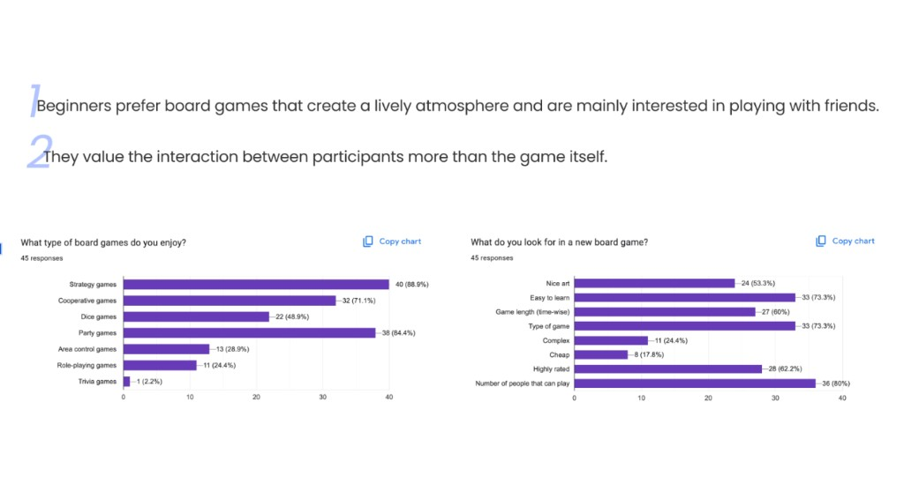
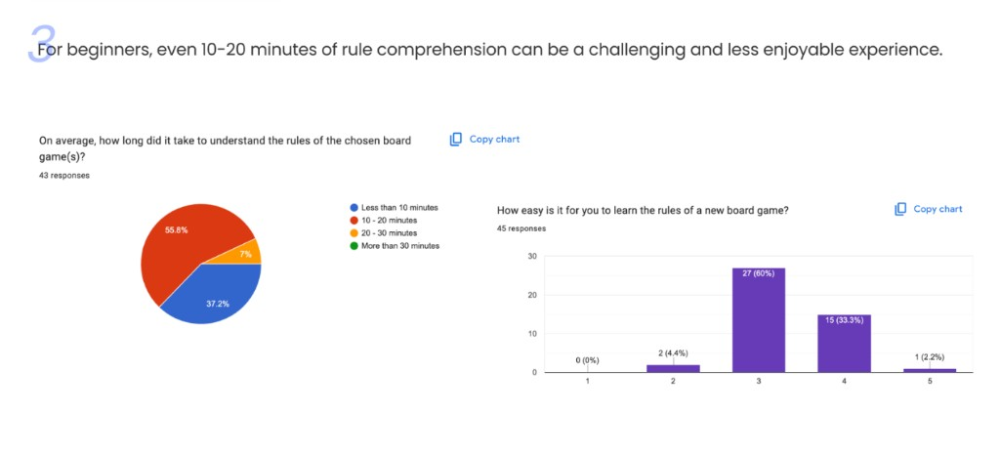
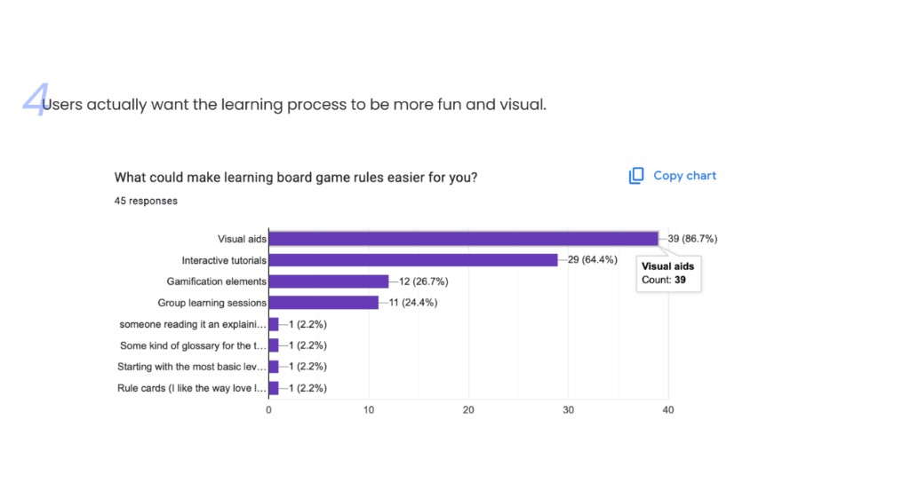
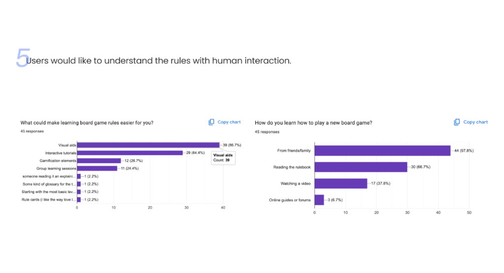
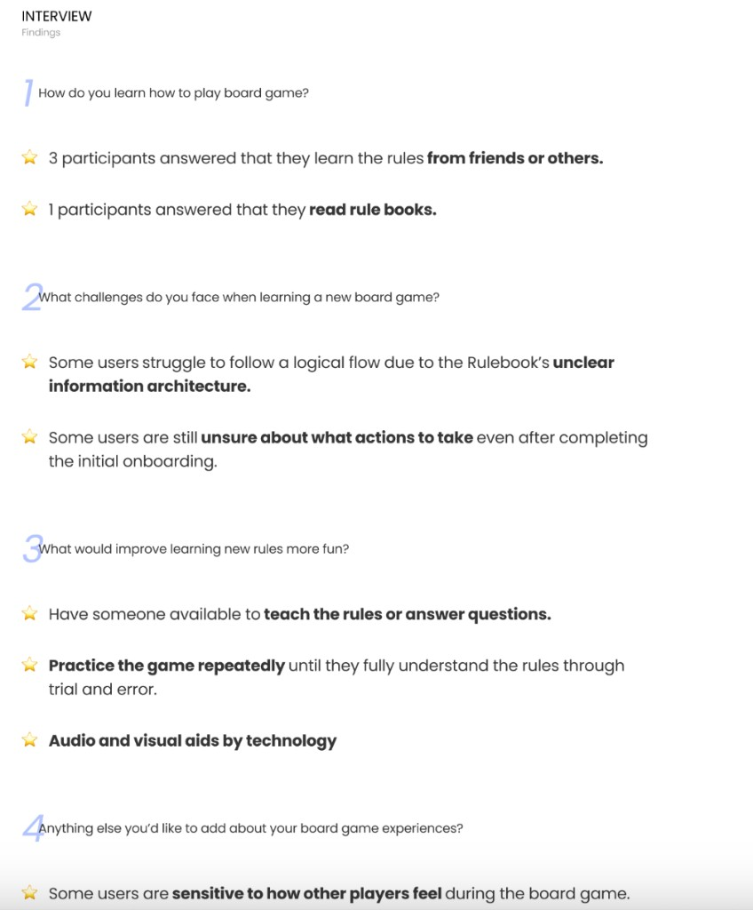
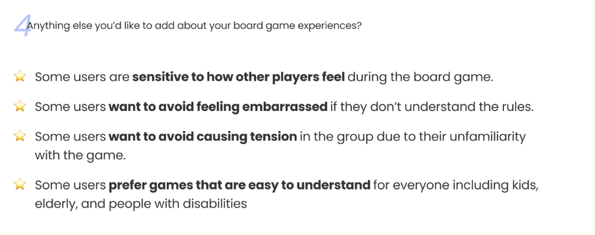
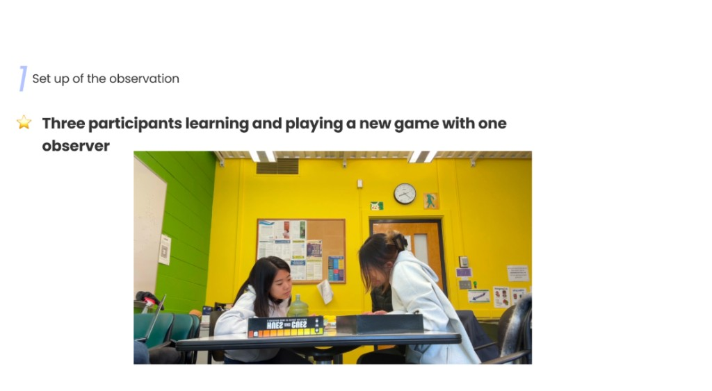
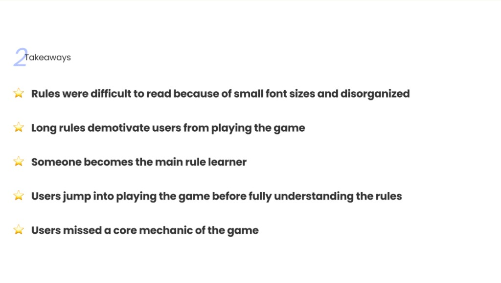

Board Game Onboarding
Introduction
In recent years, board games have become a staple way of socializing and building community with those around us. Whether it’s families trying to bond or young adults trying to hang out with or make friends, board games are supposed to be a fun way to connect and make memories with each other.
However, in our personal experiences and research findings, we find a major roadblock in this bonding activity: learning the rules. In many situations, we find that many are willing to play a game only if someone there already knows and can explain the rules to them. Without the pre-existing expert, someone is going to have to start from square one and read a rulebook that can be multi-paged and confusing; once they learn, they then have to be confident enough to explain to everyone else playing how to play the game. And if they forget to explain something or some information is forgotten while playing, everyone has to pause while someone re-learns the correct information. Not only is this a confusing, time-consuming process, but it’s also an event that puts immense pressure on one person to explain the rules accurately and concisely to everyone else. We don’t believe that’s a fun and productive way to spend time with others.
Overview
Design problem
How can we create an interesting and exciting onboarding experience for board game learners to get them playing accurately as soon as possible?
Document Audience
This document is intended for board game developers and publishers to provide insight into this issue and a solution that can be built and implemented.
Research Insights
Through a combination of surveying and observation, we took away these main points:
- Seeing a rulebook is enough to de-motivate players from wanting to play.
- Only 1-2 people can even read the rules simultaneously, even if more people are willing due to its book format.
- Players want to get to playing as fast as possible
- Players don't like going back and referencing the rules to clarify any confusion that comes up
- Players feel embarrassed when they do not understand rules as they don't want to slow other players down
- Players just want someone to explain the rules to them and be available to answer their questions
Board Game Onboarding Survey
We conducted a survey to understand how board game players learn rules, what challenges they face during onboarding, and what support would make getting to the table faster and easier.
Survey Content
How would you describe your board game experience level?
How often do you play board games?
What type of board games do you enjoy?
What do you look for in a new board game?
Which of these board games have you played before?
On average, how long did it take to understand the rules of the chosen board game(s)?
How do you learn how to play a new board game?
How easy is it for you to learn the rules of a new board game?
What challenges do you face when learning a new board game?
What could make learning board game rules easier for you?
Anything else you'd like to add about your board game experience?
Findings
45 participants completed the survey.
Beginners prefer lively, social play
Beginners prefer board games that create a lively atmosphere and are mainly interested in playing with friends. When asked what types of board games they enjoy, strategy games (40/45, 88.9%) and party games (38/45, 84.4%) were the most popular selections, followed by cooperative games (32/45, 71.1%). Dice games (22/45, 48.9%) drew moderate interest, while area control (13/45, 28.9%) and role-playing games (11/45, 24.4%) were less common; trivia games barely registered (1/45, 2.2%).
Interaction matters more than the game
They value the interaction between participants more than the game itself. When choosing a new board game, the number of people that can play (36/45, 80%) topped the list — signaling that social fit matters most. Easy to learn (33/45, 73.3%) and type of game (33/45, 73.3%) tied for second, followed by highly rated (28/45, 62.2%) and game length (27/45, 60%). Nice art (24/45, 53.3%) was a moderate factor, while complexity (11/45, 24.4%) and price (8/45, 17.8%) ranked lowest.

Rule comprehension is a hurdle
For beginners, even 10–20 minutes of rule comprehension can be a challenging and less enjoyable experience. When asked how long it took to understand the rules, a majority — 55.8% (24/43) — reported 10–20 minutes, while 37.2% (16/43) needed less than 10 minutes. Only 7% (3/43) took 20–30 minutes, and no one reported needing more than 30 minutes. Learning ease skewed middling: 60% (27/45) rated difficulty at 3 on a 1–5 scale, 33.3% (15/45) at 4, and just 4.4% (2/45) at 2; only one respondent (1/45, 2.2%) found it very easy (5), and none rated it very difficult (1).

Learning should be fun and visual
Users actually want the learning process to be more fun and visual. Visual aids dominated responses to what could make learning easier — 39 of 45 respondents (86.7%) selected them. Interactive tutorials followed at 29 (64.4%), while gamification elements (12/45, 26.7%) and group learning sessions (11/45, 24.4%) had modest support. A few write-in suggestions — someone reading or explaining the rules, a glossary, starting at a basic level, and rule cards — each drew a single response (1/45, 2.2%).

Rules are best learned through people
Users would like to understand the rules with human interaction. Nearly everyone learns from people around them: 44 of 45 respondents (97.8%) learned from friends or family, far outpacing reading the rulebook (30/45, 66.7%), watching a video (17/45, 37.8%), or online guides and forums (3/45, 6.7%). This reinforces the appetite for human-guided learning — consistent with visual aids (39/45, 86.7%) and interactive tutorials (29/45, 64.4%) topping the list of preferred supports.

Board Game Onboarding User Interviews
We followed the survey with semi-structured interviews to understand how players learn rules in context, what slows onboarding down, and what would make rule learning feel more social and approachable.
User Interview Script
-
How would you describe your board game experience level?
-
How often do you play board games?
-
What type of board games do you enjoy?
-
What do you look for in a new board game?
-
Which of these board games have you played before?
-
On average, how long did it take to understand the rules of the chosen board game(s)?
-
How do you learn how to play a new board game?
-
How easy is it for you to learn the rules of a new board game?
-
What challenges do you face when learning a new board game?
-
What could make learning board game rules easier for you?
Anything else you'd like to add about your board game experience?
Interview Notes
Participant 1. Intermediate experience; plays weekly. Enjoys strategy and party games; looks for games that are easy to learn with the right player count. Has played Catan, Codenames, and Carcassonne. Typically needs 10–20 minutes to understand rules; learns from friends, family, and videos. Rated learning ease 4 out of 5. Challenges include lengthy rules and lack of visual aids. Wants visual aids and interactive tutorials. Described ideal games as social and easy to get into.
Participant 2. Advanced experience; plays monthly. Enjoys strategy, area control, and role-playing games; looks for complexity, game type, and highly rated titles. Has played Scythe, 7 Wonders, Pandemic, and Azul. Typically needs 20–30 minutes to understand rules; learns from rulebooks and online forums. Rated learning ease 3 out of 5. Challenges include complex setup and difficulty understanding mechanics. Wants gamification and group learning sessions. Enjoys complexity but finds setup a barrier to getting started.
Participant 3. Beginner experience; plays yearly. Enjoys party and dice games; looks for nice art, low cost, and easy-to-learn rules. Has played Wavelength and Mysterium. Typically needs less than 10 minutes to understand rules; learns from friends and family. Rated learning ease 5 out of 5. Challenges include boredom and lengthy rules. Wants visual aids and tutorials. For party play, rules need to be super simple.
Findings
Four participants completed interviews. Findings below synthesize recurring themes across sessions.
Rules are best learned through people
When asked how they learn how to play board games, three of four participants described learning from friends or others who could walk them through setup and early turns. One participant relied on reading the rulebook directly. Across sessions, human guidance was the default path — not because players disliked written rules, but because explaining rules to a group is faster, more social, and easier to adapt when someone gets stuck.

Rulebooks fail when structure is unclear
Participants consistently described rulebook information architecture as hard to follow — sections did not match the order of play, and it was difficult to trace a logical flow from setup to first turn. Even after onboarding, some participants remained unsure what actions to take during gameplay. Lengthy rules without visual support compounded the problem, especially for beginners who wanted to get to the table quickly.

Learning should feel active, not solitary
Participants wanted learning rules to feel more fun and less like homework. A real-time person to teach and answer questions was the most valued support, followed by repeated practice through trial and error. Several also pointed to audio and visual aids delivered through technology — interactive tutorials, visual rule summaries, and gamified walkthroughs — as ways to make onboarding engaging without replacing the social experience of learning together.
Social pressure shapes the onboarding experience
Beyond mechanics, participants described an emotional layer to learning rules. They were sensitive to how others at the table felt — wanting to avoid embarrassment when rules were unclear, and avoiding anything that could cause group tension or slow everyone down. Several preferred games that were easy for everyone at the table, including kids, elderly players, and people with disabilities, so no one person carried the burden of teaching or felt left behind.
Board Game Onboarding Fly on the Wall Observations
We observed three participants learning and playing a new game with one observer in a casual indoor group setting. The session focused on Hues and Cues — a color-clue party game none of the participants had played before — to watch how a group moves from opening the box to playing accurately without a pre-existing expert in the room.

Findings
Observation captured how the group handled an unfamiliar rulebook in real time — from first impressions through early turns.
Rulebooks create friction before play begins
Before anyone reached for a game piece, the rulebook itself became a barrier. Participants described the rules as difficult to read — small font sizes and a disorganized layout made it hard to scan for what mattered. The length of the document further demotivated the group; seeing how much there was to absorb made several participants less eager to start. Rather than feeling invited into the game, the group confronted a wall of text that slowed momentum before the first turn.
One person becomes the de facto teacher
As the group worked through the rules, a familiar dynamic emerged: someone stepped into the role of main rule learner. That participant read ahead, interpreted sections for the others, and effectively became the group's single source of truth. The rest of the table waited on that person's understanding rather than engaging with the rulebook directly — reinforcing the pattern seen in survey and interview data that human explanation, not written documentation, carries onboarding.
Eagerness to play outpaces rule comprehension
Even with one person leading, the group moved into gameplay before everyone fully understood the rules. Participants jumped into playing rather than pausing to confirm mechanics — and during early turns, they missed a core mechanic of the game entirely. The gap between wanting to get to the table and actually knowing how to play accurately showed up in real time: enthusiasm pulled the group forward, but incomplete comprehension meant play had to be corrected or restarted once the oversight surfaced.
